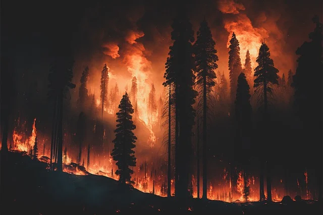

WildFire

Wildfires, also known as forest fires or bushfires, are uncontrolled fires that rapidly spread across vegetation such as forests, grasslands, and other landscapes. They can occur naturally or be caused by human activities and are a significant environmental and safety concern due to their potential to cause extensive damage.
Causes of Wildfires:
- Natural Causes:
- Lightning: The most common natural cause of wildfires. A single lightning strike can ignite a fire in dry vegetation.
- Volcanic Eruptions: Lava flows and pyroclastic flows from volcanoes can start fires in surrounding forests and grasslands.
- Spontaneous Combustion: In rare cases, decomposing organic material can heat up and spontaneously ignite, particularly in hot and dry conditions.
- Human Causes:
- Campfires and Barbecues: Unattended or poorly managed campfires can easily spread to nearby vegetation.
- Cigarettes: Discarded cigarette butts can ignite dry grass or leaves, starting a fire.
- Agricultural Burns: Controlled burns intended for clearing land can escape control and lead to wildfires.
- Arson: Intentional setting of fires is a significant cause of wildfires in some areas.
Wildfire Prevention and Management:
- Firebreaks: Creating barriers that stop or slow the spread of a wildfire, such as clearing vegetation in a strip or using natural features like rivers.
- Controlled Burns: Intentionally setting small, manageable fires to reduce the amount of combustible material in an area, thereby lowering the risk of a large wildfire.
- Public Education: Educating the public about fire safety, including proper handling of fire and the risks of starting a wildfire.
- Fire-Resistant Building Materials: Using materials that are less likely to catch fire can help protect structures in wildfire-prone areas.
- Emergency Response: Having well-equipped and trained fire crews, along with evacuation plans, can save lives and property when a wildfire occurs.
- Monitoring and Early Detection: Utilizing satellite imagery, drones, and fire lookout towers to detect wildfires early, allowing for quicker response times.